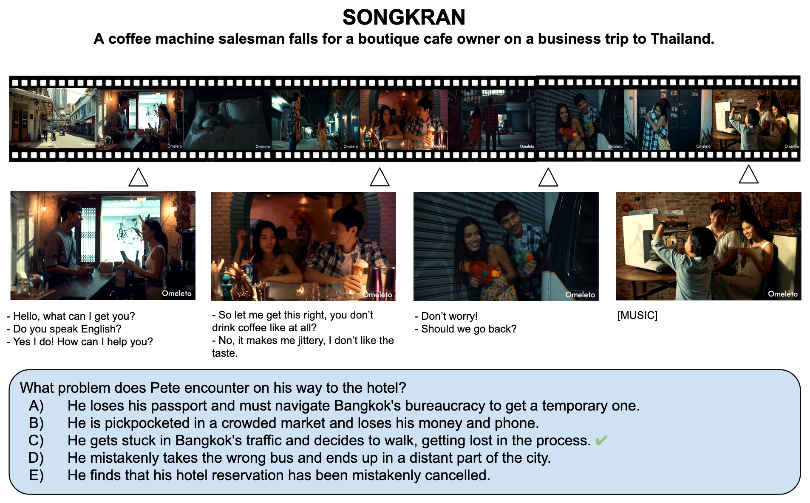
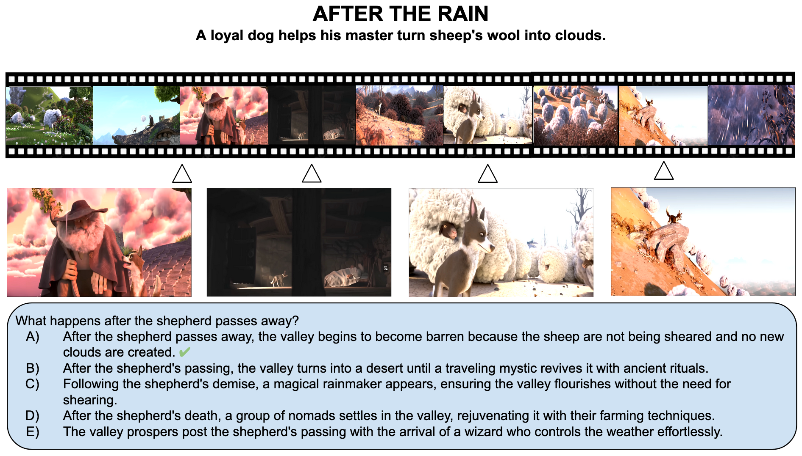
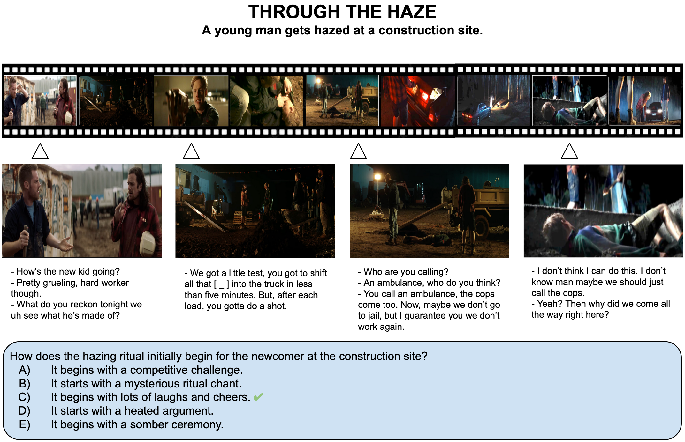
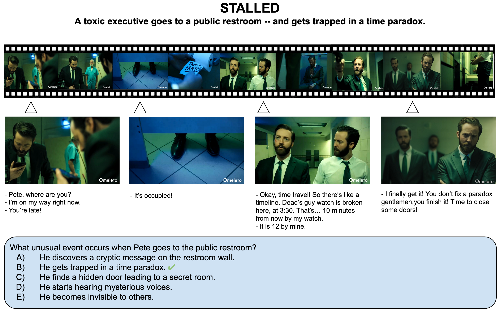

Video Link: https://www.youtube.com/watch?v=Gi__cddQCNU

Video Link: https://www.youtube.com/watch?v=qEaoaRpRRzo

Video Link: https://www.youtube.com/watch?v=05-CLtrWn38

Video Link: https://www.youtube.com/watch?v=7mSH86O2qzA
Recent advances in vision-language models have significantly propelled video understanding. Existing datasets and tasks, however, have notable limitations. Most datasets are confined to short videos with limited events and narrow narratives. For example, datasets with instructional and egocentric videos often document the activities of one person in a single scene. Although some movie datasets offer richer content, they are often limited to short-term tasks, lack publicly available videos and frequently encounter data leakage given the use of movie forums and other resources in LLM training.
To address the above limitations, we propose the Short Film Dataset (SFD) with 1,078 publicly available amateur movies, a wide variety of genres and minimal data leakage issues. SFD offers long-term story-oriented video tasks in the form of multiple-choice and open-ended question answering. Our extensive experiments emphasize the need for long-term reasoning to solve SFD tasks. Notably, we find strong signals in movie transcripts leading to the on-par performance of people and LLMs. We also show significantly lower performance of current models compared to people when using vision data alone.
@inproceedings{ghermi2024short,
author = {Ghermi, Ridouane and Wang, Xi and Kalogeiton, Vicky and Laptev, Ivan},
title = {Short Film Dataset (SFD): A Benchmark for Story-Level Video Understanding},
journal = {arXiv},
year = {2024}
}